A Premium Mobile Car Detailing Company in Reno, NV
Cars, trucks, RVs, boats and motorcycles. Paint correction and ceramic coating done on site. We carry our own water and power, so all we need from you is a place to park.
Top Detailing Services Near You
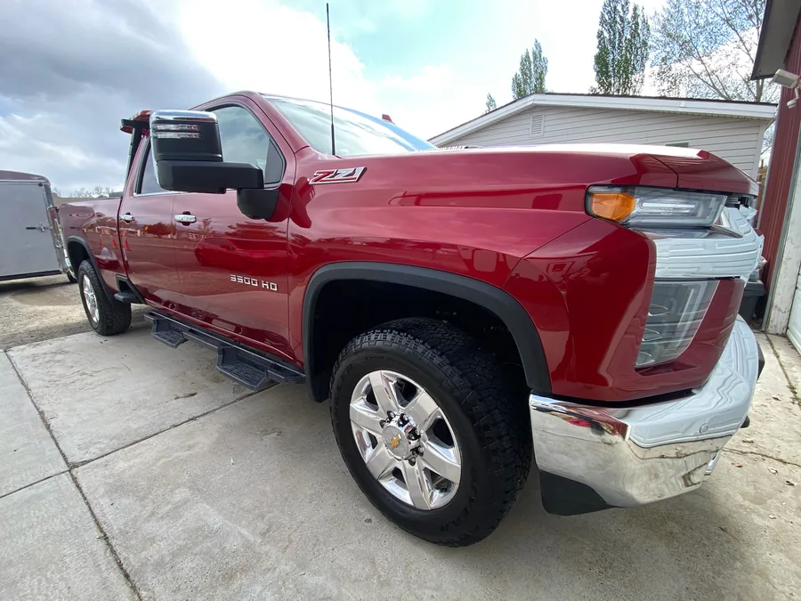
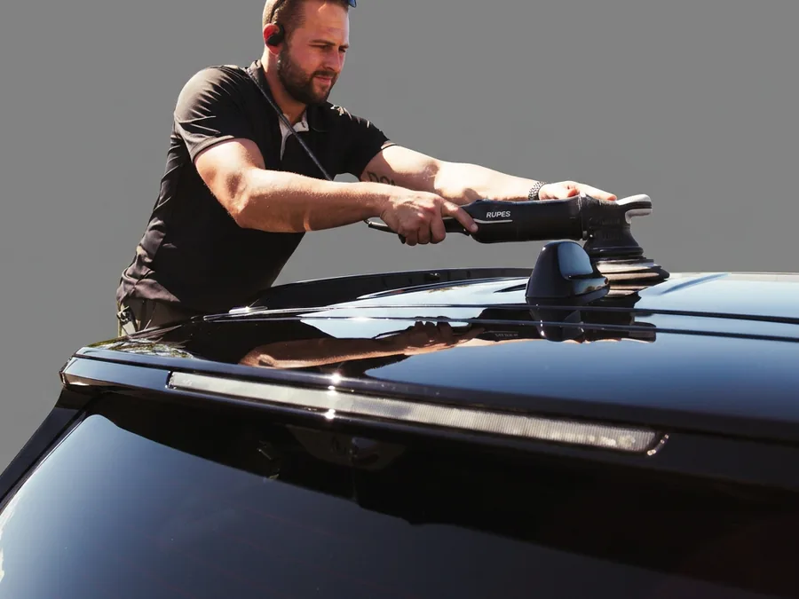
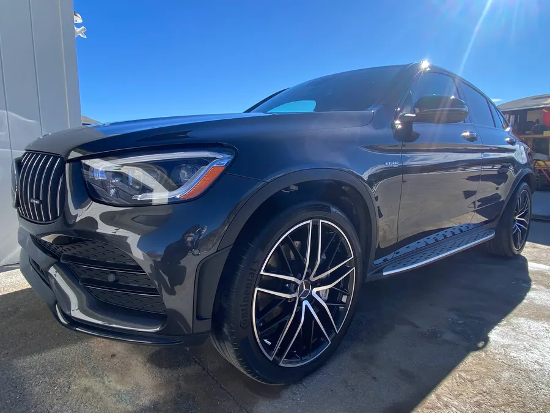
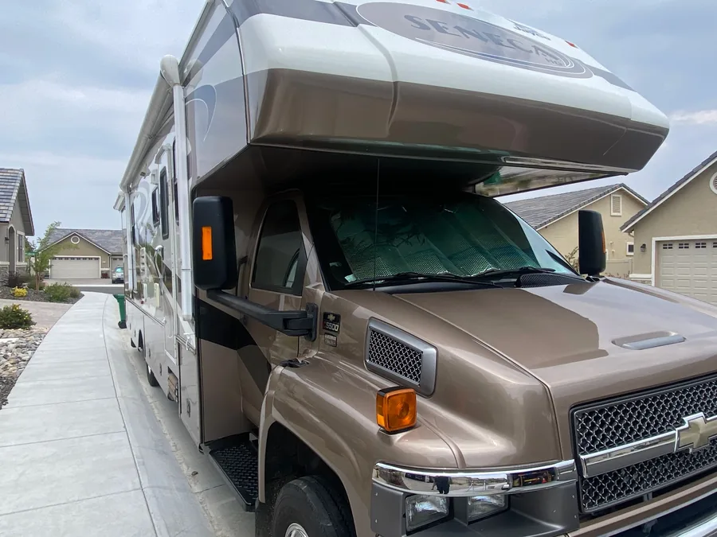
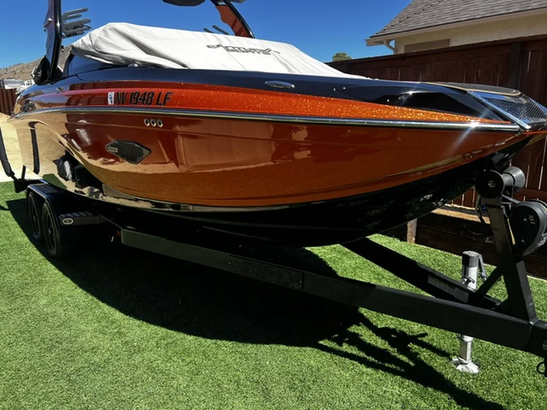
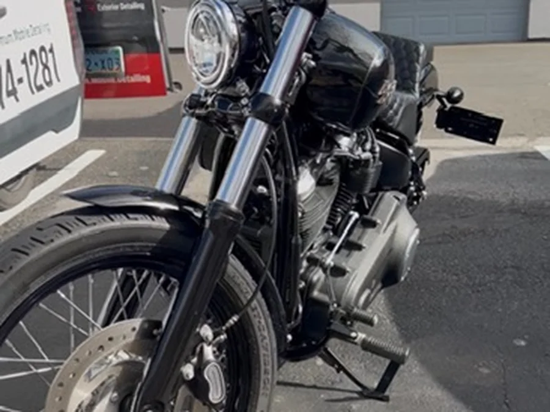
The Part Where the Paint Speaks
Real vehicles from real driveways around Reno and Sparks. No stock photos of cars nobody here has ever owned.
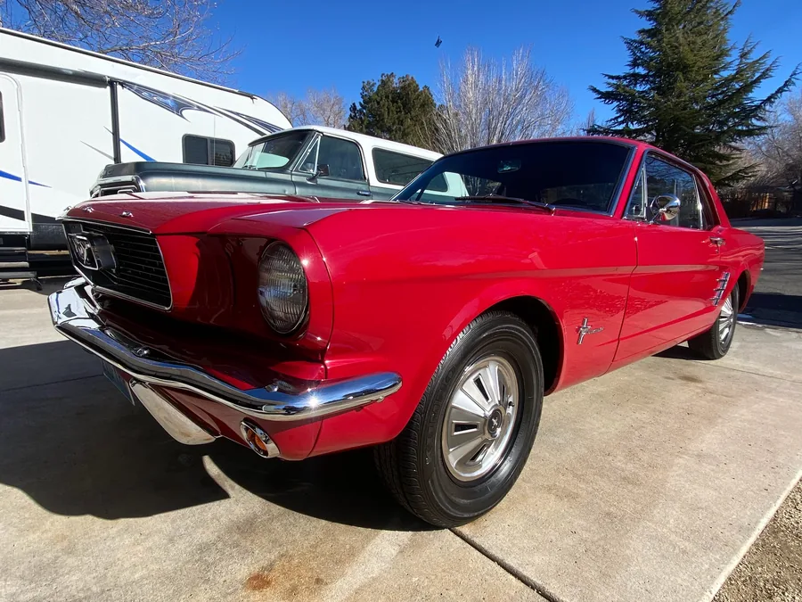
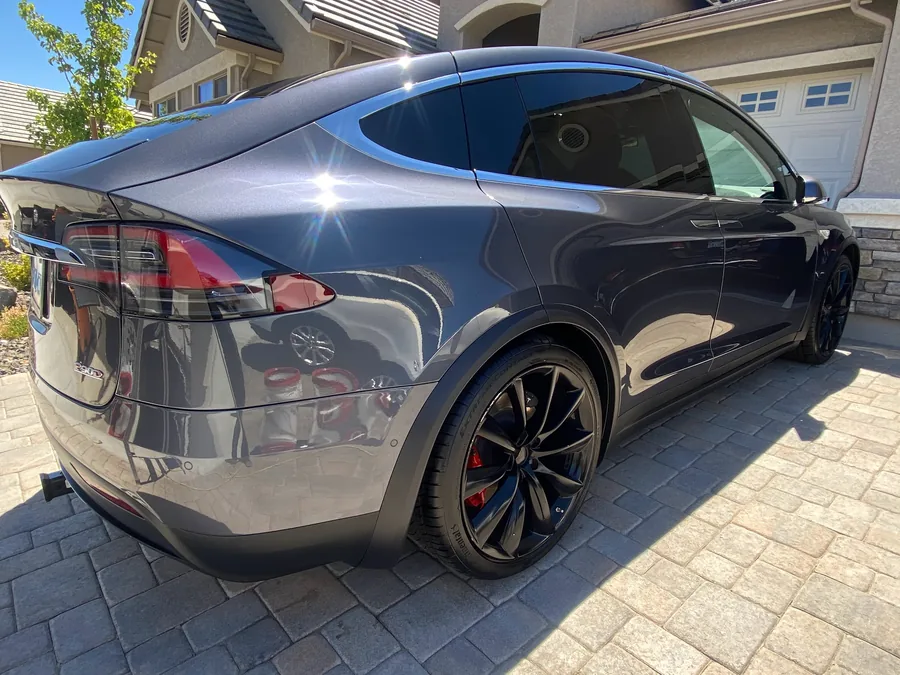
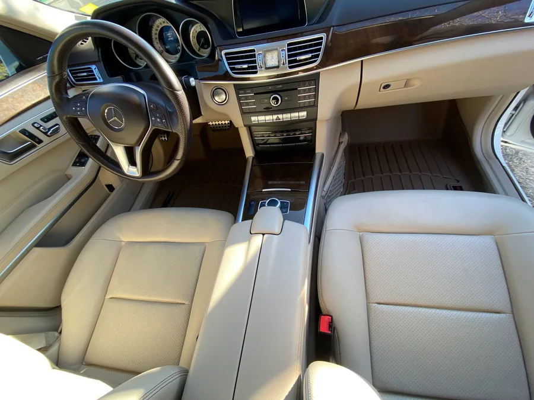
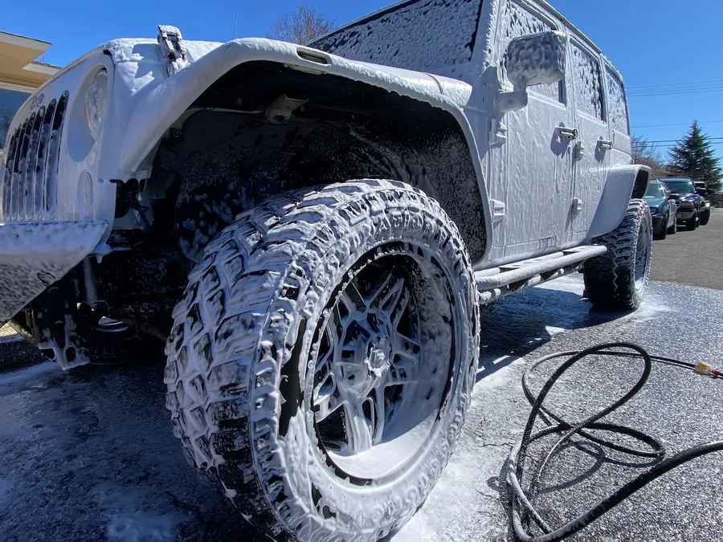
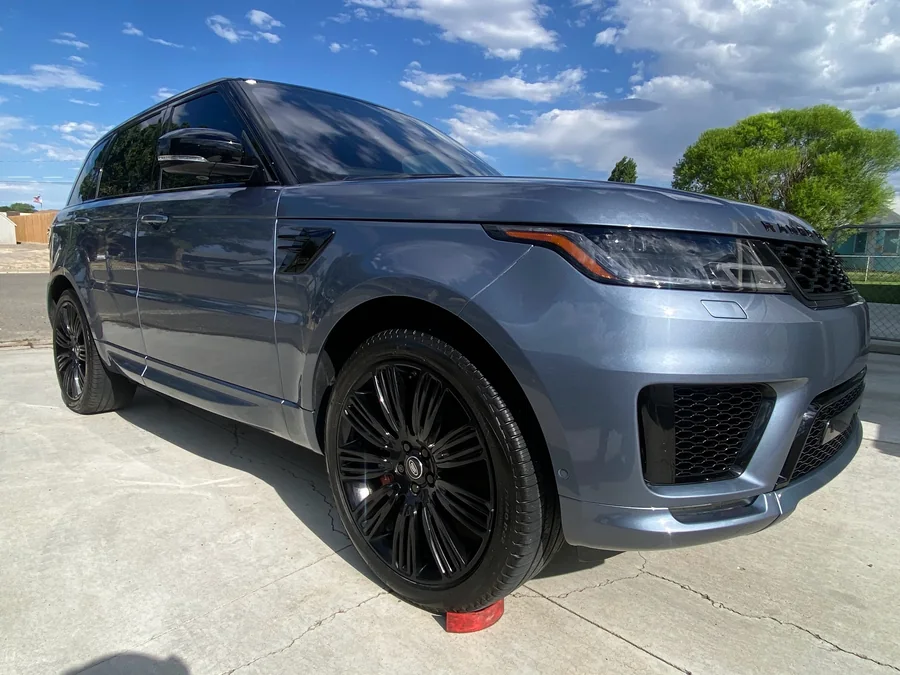
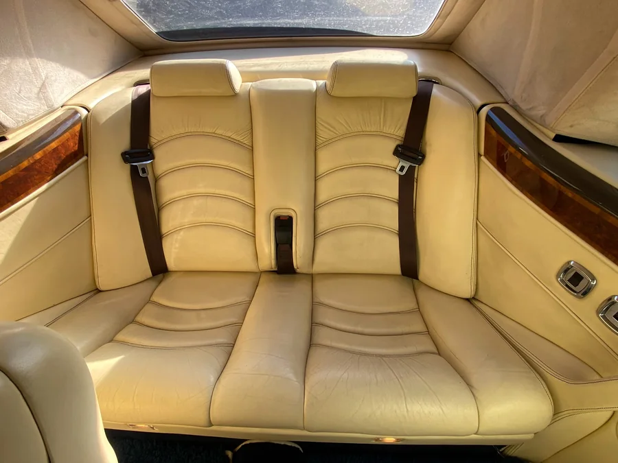
What Reno Drivers Say
5.0 stars from 66 reviews on Google.
This company did a fantastic job on our boat. We were able to trust them to take care of it without being present. Great communication! Highly recommended.
Booking was easy, good communication, and they did a phenomenal job on the detail. Car looks better than brand new. Will continue to use for maintenance detailing and other cars.
Maximum Mobile Detailing did an amazing job on my toddler/ dog dirty suv! Prompt and efficient, my car looks brand new again!
One truck, one detailer, no shop visit
Maximum Mobile Detailing is Alec. He quotes the job, he does the work, and he walks you around the vehicle when it is done. Nobody gets subcontracted your paint.
We carry our own water and a generator, so it does not matter whether you are in an apartment lot, an office lot, or a storage yard in January.
Correction comes before coating. Always. A coating seals in whatever is underneath it for the next few years, so if the paint is swirled, polishing it out first is not an upsell, it is most of the job.
A detail is not a car wash. A wash moves dirt around.
Call or text Alec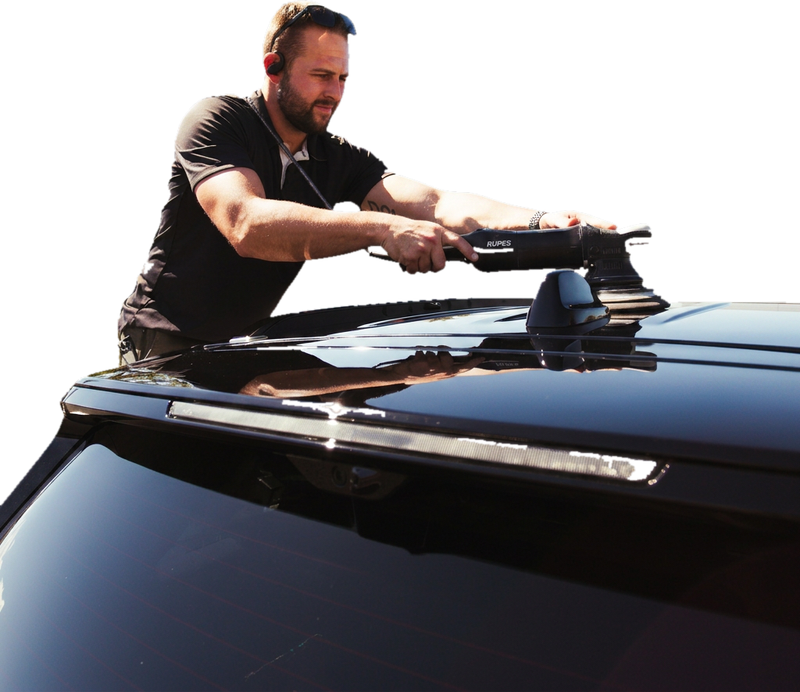
Why Detailing in Reno Is a Different Job
4,500 feet of ultraviolet
UV intensity climbs about four percent for every thousand feet of elevation, and Reno gets roughly 250 sunny days a year. That is what fades red and black paint, chalks headlights, and turns glossy gel coat on boats and RVs dusty in a couple of seasons. Wax buys you weeks against it. A ceramic coating buys you years, because the coating oxidizes instead of your paint.
Hard water, road salt and playa dust
Truckee Meadows water leaves mineral rings baked onto paint and glass, and sprinkler overspray hits the same panel every morning until it etches into the clear coat, where washing will not touch it. In winter, magnesium chloride off I-80 and the Mt. Rose Highway clings to undercarriages and wheels. In summer it is alkali dust and pine sap. Same answer either way: decontaminate properly, then leave protection on it.
Mobile Detailing Across Reno, Sparks and 20 Miles Around
Inside roughly a 20 mile ring around Reno there is no travel charge. Outside it, ask anyway. We go further for RVs, boats and multi-vehicle jobs.
- Reno
- Sparks
- Spanish Springs
- Sun Valley
- Lemmon Valley
- Golden Valley
- Stead
- Cold Springs
- Verdi
- Mogul
- Somersett
- Caughlin Ranch
- Northwest Reno
- Midtown
- Old Southwest
- Hidden Valley
- Donner Springs
- Damonte Ranch
- Double Diamond
- South Meadows
- Steamboat
- Pleasant Valley
- Washoe Valley
- New Washoe City
- Wingfield Springs
- Sparks Marina
- Sun Valley Blvd corridor
- Virginia City (just outside, ask)
Mobile Detailing Questions People in Reno Actually Ask
How much does mobile detailing cost in Reno?
Every job gets its own quote, because condition drives the number more than vehicle size does. A car detailed twice a year and one that has not been touched in five years are two different afternoons, and RVs and boats are quoted by the foot. Rather than post a price that turns out to be wrong for your vehicle, we look at it first. Text a couple of photos to 775-374-1281 and you get a real figure back, usually the same day, with no obligation.
Do you really come to me, or do I drop the car off?
We come to you. Everything on this page happens at your house, your office, your storage lot or the marina. There is no shop to drive to and no shuttle ride. That is the entire point of the business.
Do I need to provide water or electricity?
No. The truck carries its own water and its own power. If you want to offer a spigot we will happily use it, but nothing about the job depends on it. This is why we can work at apartment complexes and office lots where there is no hose within a hundred yards.
How long does it take?
A full car or truck detail runs two to five hours depending on condition, and a motorcycle is one to three. Paint correction is a one to two day job because the polishing itself is slow and there is no way to rush it without leaving marks. Ceramic coating runs one to two days with the vehicle staying put and dry while it cures. RVs and boats vary a lot with length and oxidation. You get a time estimate with your quote, before anything is booked.
What is the difference between a wash, a detail, and paint correction?
A wash removes loose dirt. A detail removes what a wash cannot: bonded contamination in the paint, brake dust welded to the wheels, grime in the seams and jambs, and everything ground into the carpet and upholstery. Paint correction is a separate operation that removes damage from inside the clear coat itself, which is where swirl marks, spider webbing and water spot etching live. Wax and sealant hide those temporarily. Correction removes them.
Is ceramic coating actually worth it here?
In Reno, more so than most places. The elevation and the sun count are what kill paint here, and a coating is a sacrificial UV barrier that takes it instead. The other half of the value is maintenance: a coated car washes in a fraction of the time because nothing sticks. That said, it is not magic. It does not stop rock chips and it does not mean you never wash the car again. If your paint is already heavily swirled, the correction underneath is the bigger part of the bill and the bigger part of the result.
Do you detail RVs and boats at storage lots or the marina?
Regularly. Most RV and boat work happens exactly there, because that is where the thing lives. All we need is permission from the facility and room to work around the unit. If your storage yard has rules about washing on site, tell us up front and we will work with them.
What happens if it rains or snows on my appointment day?
We call you and move it, at no charge. Nothing good comes from correcting or coating paint in bad weather, and a wash in a snowstorm is a waste of your money. Interior work can often go ahead if there is covered space available.
Can you detail my kid's Power Wheels?
If it has paint, we can polish it. Bring it out when we do the real car and we will not charge you for it. No ceramic coating on a Power Wheels, though. There has to be a line somewhere.
How do we get started?
Call or text 775-374-1281 with your vehicle and a couple of photos. You get a quote back, usually the same day and at the latest within one business day. If it works, we pick a date. No deposit for standard details.
Call or Text for a Quote
Quotes usually come back the same day, and you are talking to Alec, not an answering service.
Text a wide shot of the vehicle, plus close ups of anything you are worried about. That gets you a real number instead of a range.
Rather email? maximobiledetailing@gmail.com